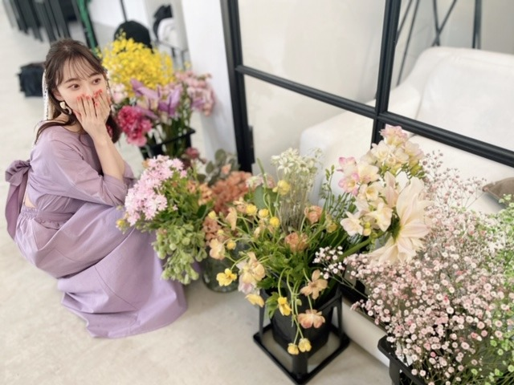

2020/0415Wed#おうち時間 #ダンス
ずっとお家にいてゲームやアニメにご飯に睡眠...
むくむく太る一方だったので今日から
ダンスの自主練を始めました☺︎
私の苦手なジャンルとか
動きを克服できるように
いい汗かきながら頑張ります!
今覚えてるのは
Red VelvetさんのPsycho
TWICEさんのFeel Special
BLACKPINKさんのKill This Love
IZ*ONEさんのFIESTA、SPACESHIP、AYAYAYA
EVERGLOWさんのAdios、Bon Bon Chocolat、DUNDUN
MAMAMOOさんのHIP
Wanna OneさんのEnergetic
です
ちなみに今日インフルエンサーも
やりました。笑
乃木坂はあまり激しいダンス曲は少ないですが
だからこそ全身をちゃんと動かせるようにして
1つ1つの振りが魅力的に見えたらいいなと
思っています
他にもおすすめのダンス
あったら教えてください☺︎
早く歌番組やライブで
パフォーマンスしたいです...
( ; _ ; )
それまで練習頑張ります!
そして
GRLさんのモデルさせていただいています!

今こそおうち時間活用して、
サイトを見てみてくださいね✨
このワンピースお気に入り!
オトナミオナ
では〜
2020/04/15 19:00
コメント(340)
みおな〜！可愛すぎる〜
本当ブログ更新ありがとうございます ♂️
みおなのダンス好き♪早くまた見れる日が早くきますように
本当ブログ更新ありがとうございます ♂️
みおなのダンス好き♪早くまた見れる日が早くきますように
更新ありがとう！！
だらけがちな時期だけどさすが未央奈！！
自分もできるだけ体動かしてます！！
ちなみに前にインフルエンサーとシンクロニシティはとにかく映像見まくってある程度踊れるようにしてました笑
あとマネキンも！
ダンスパワーアップした未央奈見れるの楽しみにしてます！頑張れ！
だらけがちな時期だけどさすが未央奈！！
自分もできるだけ体動かしてます！！
ちなみに前にインフルエンサーとシンクロニシティはとにかく映像見まくってある程度踊れるようにしてました笑
あとマネキンも！
ダンスパワーアップした未央奈見れるの楽しみにしてます！頑張れ！
こんばんは！
自主練流石ですね
本当に早くライブや歌番組でみたいです✨
それまで頑張ってください❗
自主練流石ですね
本当に早くライブや歌番組でみたいです✨
それまで頑張ってください❗
最近未央奈さんのブログ更新が多くてとても嬉しいマユネーズです
最後の写真が好きすぎる〜
最後の写真が好きすぎる〜
Red VelvetだとRed Flavor (빨간 맛)もおすすめです！
ITZYのDALLA DALLAも！
ITZYのDALLA DALLAも！
更新ありがとう！
ブログたくさん更新ありがとう
オトナミオナさんお綺麗です☺️
オトナミオナさんお綺麗です☺️
綺麗な、そしてどこか怪しげなお姉さんって雰囲気ですね。
(^ー^)
(^ー^)
未央奈！！
２回目の更新ありがとう
今度未央奈のダンス練習動画載せて笑笑
早くライブとか握手会とかできる日常に戻りたいね
どんな姿も未央奈も似合ってる
次の更新も待ってるね〜！！
２回目の更新ありがとう
今度未央奈のダンス練習動画載せて笑笑
早くライブとか握手会とかできる日常に戻りたいね
どんな姿も未央奈も似合ってる
次の更新も待ってるね〜！！
[#おうち時間 #ダンス]ありがとー❗️
今だからこそ普段出来ない事をやるべきですよね。
ダンスの達人になれるようがんばってください❗️
自分の周りにがんばっている人がいると、
自分もやる気になります。
オススメのダンスは「にゃんこスター」さんですねー。
次のブログと写真集楽しみです❗️
今だからこそ普段出来ない事をやるべきですよね。
ダンスの達人になれるようがんばってください❗️
自分の周りにがんばっている人がいると、
自分もやる気になります。
オススメのダンスは「にゃんこスター」さんですねー。
次のブログと写真集楽しみです❗️
更新ありがとうございます！未央奈さんが覚えている
曲、私も好きな曲ばかりで、なんだか嬉しいです。
オトナミオナ、ほんと好きです。いつも癒してくれて
ありがとう、大好きー
曲、私も好きな曲ばかりで、なんだか嬉しいです。
オトナミオナ、ほんと好きです。いつも癒してくれて
ありがとう、大好きー
堀さん、こんばんは。
家にいる時間が長い分、運動する機会が減って、体重も気になる今日この頃。アイドルにとっては大問題！ダンスで汗を流すのはダイエットにもストレス解消にももってこいかと。
乃木坂46は今年のバースデイライブで199曲＋1曲を披露したわけですが、自分の参加したダンスを全部憶えているのがすばらしいと思います。もちろん少し忘れてしまうこともあるのでしょうが、それでも練習すればまた踊れるのですからすごい！
この機会に乃木坂46のダンスにもさらに磨きをかけて、いつの日かステージに立つ日がきたときに活かしてください。楽しみにしています。
ではまたコメントしますね。おやすみおな。
さらばだ、また会おう！（気球に乗って去りぬ〜）
家にいる時間が長い分、運動する機会が減って、体重も気になる今日この頃。アイドルにとっては大問題！ダンスで汗を流すのはダイエットにもストレス解消にももってこいかと。
乃木坂46は今年のバースデイライブで199曲＋1曲を披露したわけですが、自分の参加したダンスを全部憶えているのがすばらしいと思います。もちろん少し忘れてしまうこともあるのでしょうが、それでも練習すればまた踊れるのですからすごい！
この機会に乃木坂46のダンスにもさらに磨きをかけて、いつの日かステージに立つ日がきたときに活かしてください。楽しみにしています。
ではまたコメントしますね。おやすみおな。
さらばだ、また会おう！（気球に乗って去りぬ〜）
ブログ更新ありがとう！！おうち時間でダンス、、素敵です！堀ちゃんが他のアイドルのダンスカバーしてるの見たいです〜〜
あと最後の写真！！めっちゃ美人です！元からですが！笑
かっこいー！強い女って感じがして雰囲気やメイクが超好みです♡ 最近流行の中華美人系のコンセプトでしょうか~？ ほんとになんでも似合っちゃうの天才です
あと最後の写真！！めっちゃ美人です！元からですが！笑
かっこいー！強い女って感じがして雰囲気やメイクが超好みです♡ 最近流行の中華美人系のコンセプトでしょうか~？ ほんとになんでも似合っちゃうの天才です
堀ちゃん、ブログ更新ありがとう〜
堀ちゃん、お美しいねー
堀ちゃん、お美しいねー
ブログ更新ありがとうございます！
私もkpop好きなので書いてあった曲全部分かりました！！
特にIZONEが好きでAirplaneとかproduce48のRumorのダンスも好きなのでやってみてください！
コロナで大変だと思いますががんばってください！
カンちゃんとあつ森とかうらやま〜
私もkpop好きなので書いてあった曲全部分かりました！！
特にIZONEが好きでAirplaneとかproduce48のRumorのダンスも好きなのでやってみてください！
コロナで大変だと思いますががんばってください！
カンちゃんとあつ森とかうらやま〜
早くライブでダンスみたいです！
未央奈〜
ダンスの自主練 尊敬する、、
今私家で史上最高にだらけた生活送ってるから見習う！絶対に！
乃木坂のとかじゃなくて激しい系の踊ってるんだ〜
いつかインスタに動画アップしてほしいなぁ
未央奈の踊り上手だし好き
早くライブに行きたいよー！！
それと、GRLのインスタ見たよ！
未央奈もお洋服も可愛かった 飛鳥ちゃんとのツーショすごいお気に入り！
飛鳥ちゃんとのツーショすごいお気に入り！
未央奈が着てるやつが似合うようにダイエット頑張る
ダンスの自主練 尊敬する、、
今私家で史上最高にだらけた生活送ってるから見習う！絶対に！
乃木坂のとかじゃなくて激しい系の踊ってるんだ〜
いつかインスタに動画アップしてほしいなぁ
未央奈の踊り上手だし好き
早くライブに行きたいよー！！
それと、GRLのインスタ見たよ！
未央奈もお洋服も可愛かった
未央奈が着てるやつが似合うようにダイエット頑張る
オススメのダンスというかパフォーマンスはenraというパフォーマンスグループがオススメです！
ブログ更新ありがとー！
早く未央奈に会いたいです。コロナに負けずに頑張って下さい！！
早く未央奈に会いたいです。コロナに負けずに頑張って下さい！！
堀ちゃんがfeel specialとHIP踊ってるの見てみたい。twiceならYES or YES、FANCYとかLIKEYも好きだなあ。
ダンスの自主練し始めたんだね〜
いいね！私もこの機会にやろうかな……
韓国のアイドルさんたちは全身を使った表現力たっぷりなダンスが多いよね！！未央奈ちゃんが今よりもっと上手になるの応援してます！！
オトナミオナ可愛い！！！
いいね！私もこの機会にやろうかな……
韓国のアイドルさんたちは全身を使った表現力たっぷりなダンスが多いよね！！未央奈ちゃんが今よりもっと上手になるの応援してます！！
オトナミオナ可愛い！！！
KーPOP好きなんですか！？
エナジェティックやIZ*ONEの曲など踊れてすごいです！
私はX1が好きでした！！SEVENTEENの曲も踊って欲しいです！
エナジェティックやIZ*ONEの曲など踊れてすごいです！
私はX1が好きでした！！SEVENTEENの曲も踊って欲しいです！
未央奈ちゃん ブログ更新ありがとう
未央奈ちゃんのブログとかインスタをご褒美に
毎日学校からの課題に励んでます。
私は結構E-girlsのFollow meとか踊ってた！
もし良かったら未央奈ちゃんも踊ってみてください
ダンス頑張ってね
いつも応援しています 大好きです
未央奈ちゃんのブログとかインスタをご褒美に
毎日学校からの課題に励んでます。
私は結構E-girlsのFollow meとか踊ってた！
もし良かったら未央奈ちゃんも踊ってみてください
ダンス頑張ってね
いつも応援しています 大好きです
ブログ更新ありがとう！
運動不足になりがちですよね…自分もダンス頑張ります。
オトナミオナ好きです。いつもメイクには驚かされていて、楽しいです。
色々大変だと思います、お互い健康第一で頑張りましょう！
運動不足になりがちですよね…自分もダンス頑張ります。
オトナミオナ好きです。いつもメイクには驚かされていて、楽しいです。
色々大変だと思います、お互い健康第一で頑張りましょう！
オトナミオナすき！
お疲れ様です!
みおな
おうちじかん、有意義に過ごしてますね
確かに、最近は出掛ける事が減ってるので、俺も体重が61キロから62キロに増えました（歩く事が全体的に減ってるので）
少し俺も運動します
ダンスの自主練頑張って下さい
インフルエンサーは振り付けがすごく難しいんだよね
乃木坂の振り付けで好きなのは、sing out！です
手拍子でファンも参加しやすいし、歌詞も愛があって今の状況に対してピッタリの曲だと思います
GRLも確認します
オトナミオナよきです
俺の中では、ハリウッドみおなです笑
では！
ありがとうございました
おうちじかん、有意義に過ごしてますね
確かに、最近は出掛ける事が減ってるので、俺も体重が61キロから62キロに増えました（歩く事が全体的に減ってるので）
少し俺も運動します
ダンスの自主練頑張って下さい
インフルエンサーは振り付けがすごく難しいんだよね
乃木坂の振り付けで好きなのは、sing out！です
手拍子でファンも参加しやすいし、歌詞も愛があって今の状況に対してピッタリの曲だと思います
GRLも確認します
オトナミオナよきです
俺の中では、ハリウッドみおなです笑
では！
ありがとうございました
こんばんは！ ダンス！偉いですね！ 自分は 福島県出身なので 学校行ってます。 堀ちゃん お身体には気おつけてください！ メンバーと早く会えるといいですね！ またねぇー！
かわい〜
millennium paradeさんのlost and found の菅原小春さんが踊っているダンスがめっちゃカッコいいです！
難しいと思いますが踊れたらエモいです！
難しいと思いますが踊れたらエモいです！
おぉー！ダンス！
さすが、みおちゃん。
すごいね！いっぱい踊ってる。(o^^o)
みおちゃんのダンス好きです！なんだか気持ちを乗せて踊ってるような気がするから。
シンクロニシティが1番かっこいいかなぁ。
早くパフォーマンス観たい。。
練習ふぁいとー！✌️
いい写真。ダンサーっぽい。☺︎
かわいいワンピース！
サイトみまーす。笑
ふぅ〜おっとな〜
オトナミオナ 良い響き。
ほーい。
さすが、みおちゃん。
すごいね！いっぱい踊ってる。(o^^o)
みおちゃんのダンス好きです！なんだか気持ちを乗せて踊ってるような気がするから。
シンクロニシティが1番かっこいいかなぁ。
早くパフォーマンス観たい。。
練習ふぁいとー！✌️
いい写真。ダンサーっぽい。☺︎
かわいいワンピース！
サイトみまーす。笑
ふぅ〜おっとな〜
オトナミオナ 良い響き。
ほーい。
初めてコメントします!!
私も韓国すきなので韓国のダンスたくさん踊ってくれてて嬉しいです( ¨̮⋆)
良かったらGFRIENDのダンスも見てほしいです(> <)
おすすめはRoughとLABYRINTHです！！ LABYRINTHはなかなか難しいと思います◎
ブログたくさん更新してくれてありがとうございます
私も韓国すきなので韓国のダンスたくさん踊ってくれてて嬉しいです( ¨̮⋆)
良かったらGFRIENDのダンスも見てほしいです(> <)
おすすめはRoughとLABYRINTHです！！ LABYRINTHはなかなか難しいと思います◎
ブログたくさん更新してくれてありがとうございます
お疲れ様です!
DrakeさんのToosie Slideをinstagramで見たいです！
よろしくお願いします
DrakeさんのToosie Slideをinstagramで見たいです！
よろしくお願いします
堀さん、こんばんは。
ダンスの自主練とは肉体的にも精神的にも健康的ですね。家族でダンスやってるということは、夕飯のメニューとか風呂の順番とかで揉めた時にダンスバトルで決着つけてたりするんでしょうか。楽しそうですね。
あとGRL見てみました。堀さんお気に入りのワンピースは大きなリボンが妖精みたいで可愛いですね。
ダンスの自主練とは肉体的にも精神的にも健康的ですね。家族でダンスやってるということは、夕飯のメニューとか風呂の順番とかで揉めた時にダンスバトルで決着つけてたりするんでしょうか。楽しそうですね。
あとGRL見てみました。堀さんお気に入りのワンピースは大きなリボンが妖精みたいで可愛いですね。
みおなちゃん！！わたしもこの間フィエスタ覚えた〜
おすすめなのは、
レドベルの peek a boo bad boy
あいずわんの up
itzy の dalla dalla wanna be！！
インスタとかにダンス動画アップして欲しいっ
特にfiesta！！！
おすすめなのは、
レドベルの peek a boo bad boy
あいずわんの up
itzy の dalla dalla wanna be！！
インスタとかにダンス動画アップして欲しいっ
特にfiesta！！！
みおなちゃん、大好きです
未央奈ちゃんが覚え中のダンス!!偶然部活で踊った!!!!!!!!
めちゃめちゃ嬉しくてテンション高いよー！！！！
めちゃめちゃ嬉しくてテンション高いよー！！！！
アナスターシャのダンスを覚えようとしてるんだけど、時差ダンスは難しい！
振り付け動画とか揚げてほしいものです、、
振り付け動画とか揚げてほしいものです、、
未央奈 努力怠らないな！
インフルエンサー超むずそう笑笑
最初の方みんな苦戦してたもんな！
インフルエンサー超むずそう笑笑
最初の方みんな苦戦してたもんな！
大好きな未央奈ちゃんおはよう!こんな時こそ自主練や映画やドラマ、他のアーティストのダンスやLIVE映像を見て勉強し、スキルをあげてね!パワーアップした未央奈ちゃんを沢山、見るのが楽しみです。レッスン着姿の未央奈ちゃんもとても素敵で超かわいい 何事も全力でやる未央奈ちゃんが大好きです。あ～!早く新型コロナウイルス問題が解決し、いつもの生活が戻り、乃木坂４６のLIVEや番組がみたい。未央奈ちゃんの2nd写真集のお渡し会や色んな番組などで宣伝できるようになれば嬉しいです。色んな会社も大変なので、早く解決なればと毎日、祈ってます
オトナみおな♪♪ヽ(´▽｀)/毛量❗ヽ(￣▽￣)ノハンパナイΣ(゜Д゜)
ダンスなら3代目のSummermadnessいいと思います。
1人で盛り上がれるし結構振り簡単な割に疲れるから良い運動になると思います笑笑
応援してます！頑張ってください
1人で盛り上がれるし結構振り簡単な割に疲れるから良い運動になると思います笑笑
応援してます！頑張ってください
ダンスたくさん頑張っててすごいです！！
未央奈ちゃんが太ることなんてないから大丈夫！
それにいつも可愛い
昔T-ARAという韓国のグループが好きで「Roly-Poly」という歌のダンスとかどうですか
未央奈ちゃんが太ることなんてないから大丈夫！
それにいつも可愛い
昔T-ARAという韓国のグループが好きで「Roly-Poly」という歌のダンスとかどうですか
ブログ更新ありがとう！！
ダンス自主練いいですねっ！
その流れでいくとITZYはどうだろう
ICY、WANNABEなどなど、、ぜひに✨
自分はBTSのONでも練習します(無理
ダンス自主練いいですねっ！
その流れでいくとITZYはどうだろう
ICY、WANNABEなどなど、、ぜひに✨
自分はBTSのONでも練習します(無理
未央奈ブログ更新ありがとう！
コメント遅れてゴメンm(_ _)m
ダンスの練習お疲れ様！
乃木坂ではインフルエンサーと命は美しいが難しいダンスかな？
自分も今日から休みだから体動かさなきゃ〜
モデルの仕事も頑張って！応援してるよ！
体調には本当に気をつけてね！
コメント遅れてゴメンm(_ _)m
ダンスの練習お疲れ様！
乃木坂ではインフルエンサーと命は美しいが難しいダンスかな？
自分も今日から休みだから体動かさなきゃ〜
モデルの仕事も頑張って！応援してるよ！
体調には本当に気をつけてね！
ダンスの練習頑張って(^-^)/
未央奈ちゃん。ブログ更新ありがとう！凄くこまめな、ブロブ更新ありがとう。いま、家にいる時間長いので、とても嬉しいです。お花と一緒に写っている画像、いい雰囲気で、衣装も可愛いし、とてもいいです。
ダンスの自主練習なんて偉いですね！
私も見習おうかな。。。
ダンスで運動不足解消しなきゃ！
また更新してね〜♬
私も見習おうかな。。。
ダンスで運動不足解消しなきゃ！
また更新してね〜♬
ダンスいいね
ダンス何やれば良いのかわからなかったから何を踊ってるか報告嬉しいな
私もやる気出たけど覚え方のコツ教えて欲しい！
インフルエンサーも思った事あるけれどヘニャヘニャ…。
今は1人で夜ヨガやってます。1時間。体硬いのでね。
ダンス何やれば良いのかわからなかったから何を踊ってるか報告嬉しいな
私もやる気出たけど覚え方のコツ教えて欲しい！
インフルエンサーも思った事あるけれどヘニャヘニャ…。
今は1人で夜ヨガやってます。1時間。体硬いのでね。


ITZYの曲とかどうかな？